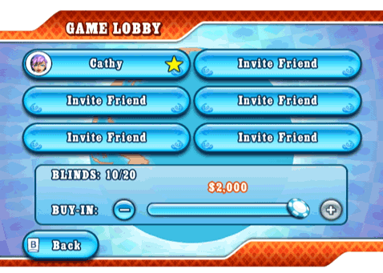

22 |
In-game chatmenu & uitnodigingen |
 |
Als je online speelt kun je kiezen uit een lijst van reeds beschreven chatberichten die je kunt versturen als je wilt bluffen, de orde wilt verstoren of je online tegenspelers wilt feliciteren. Om toegang te krijgen tot het in-game chatmenu, selecteer je het icoontje met het chatballonnetje, rechts onder in het scherm. Als je geen chatberichten wilt ontvangen, kun je deze optie uitzetten via ‘OFF’ (Uit) in het menu ‘Options’ (Opties). Als je het chatballonnetje selecteert, krijg je tevens het menu ‘Invite Friends’ (Vrienden uitnodigen) te zien. Dit is een verkorte versie van je Vriendenoverzicht. Zolang het spel geen besloten spel is voor vrienden en gehost wordt door een andere speller, kun je gewoon vrienden uitnodigen. Uitnodigingen om deel te nemen aan een spel met vrienden verschijnen in de vorm van een chatbericht met bevestigingsicoontje. Game Lobby (Lobby)  Voordat een multiplayer spel van begint, worden de spelers verzameld in de lobby. In wereldwijde games, mag iedereen vrienden uitnodigen al naar gelang er vakjes beschikbaar zijn. Hiervoor kies je gewoon een willekeurige vakje en vervolgens verschijnt je vriendenoverzicht. Bij cash-games, wordt de buy-in (het minimale inlegbedrag) ingelegd als je in de lobby bent. Als je klaar bent, selecteer je het icoontje ‘ready’ (gereed) om de host en de andere spelers op de hoogte te brengen van je status. Onthoud wel dat de host te allen tijde het spel mag beginnen, ongeacht jouw status. In dat geval wordt je hoogste buy-in automatisch gekozen. De host van het spel kun je herkennen aan een gele ster op zijn/haar vakje. Alleen een host kan vakjes reserveren in Wereldwijde games of mensen uitnodigen in spelletjes die alleen voor vrienden bestemd zijn. Toernooien beginnen pas als alle spelers zich hebben verzameld. |
 |
 |
 |